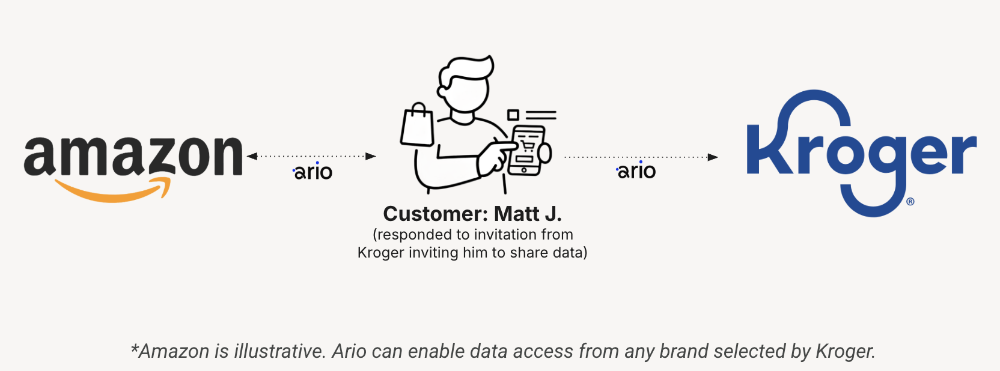

A Consented Data Connection for SurveyMonkey
March 2026 — Confidential
We're here to understand whether one specific integration pattern is possible on SurveyMonkey — and if so, what constraints you'd need.
Retailers can ingest, as first-party data, permissioned and identified user transaction history from anywhere (say, Amazon).

Standard survey questions 1–10
Connect your Amazon / grocery / travel data
Purchase behavior enriches survey responses
This is where the say–do gap closes.
12-month spend breakdown:
Attitudes, preferences, intent, satisfaction scores.
Actual spend, brand mix, category shifts, competitive behavior.
Together they create a more accurate consumer profile than either alone.